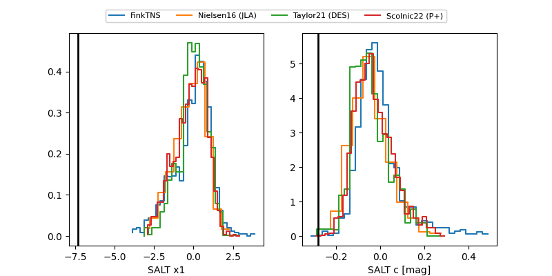

FINK: ZTF25aboiudp
Lasair: ZTF25aboiudp
ALeRCE: ZTF25aboiudp
ZTF25aboiudp (ztf,fink)
equatorial (ra, dec) = (285.4170,-11.22561)
galactic (l, b) = (24.0404,-7.33792)

last ztfg=18.92, ztfr=19.29
1 ztfg, 2 ztfr detections